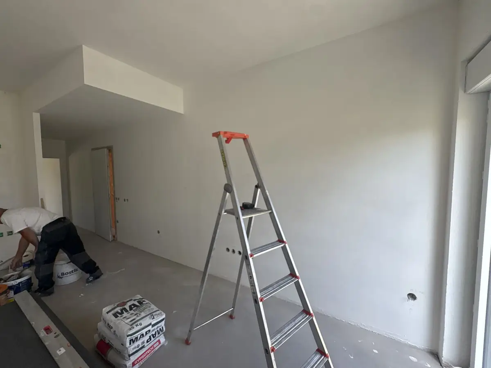
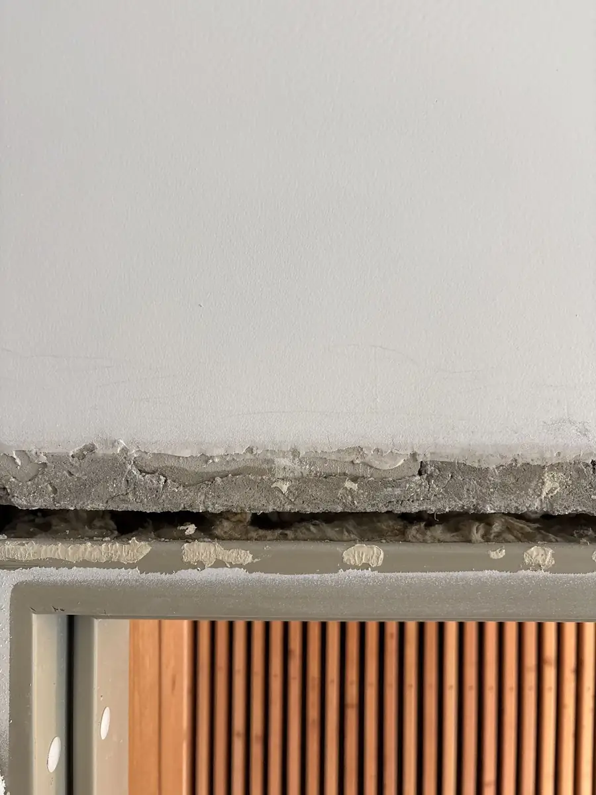
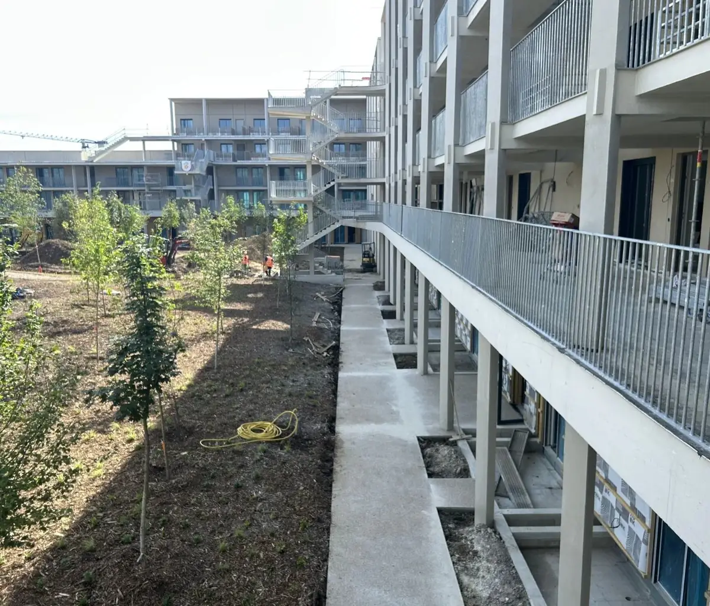

Promoteurs immobiliers · Bailleurs · Entreprises générales · Toute l’Île-de-France
Corvoyage en Île-de-France : des livraisons tenues, des réserves levées.
OF ENTRETIENS réalise vos missions de corvoyage partout en Île-de-France : préparation des logements avant livraison, visites cloisons, de pré-livraison et de livraison, intervention urgente quand une date de livraison est menacée, et levée des réserves jusqu’au dernier quitus. Référence en cours : « Un Balcon en Forêt » (SCCV — Bouygues Immobilier).
Définition
Qu’est-ce que le corvoyage ?
Le corvoyage consiste à préparer et suivre les logements d’une opération immobilière avant leur livraison : contrôler l’état de chaque logement, réaliser ou coordonner les reprises de finitions, suivre chaque réserve jusqu’à sa levée et récupérer les quitus. Le corvoyeur est l’intervenant qui permet au promoteur de livrer à la date prévue, dans de bonnes conditions, sans faire revenir chaque corps d’état.
Nos missions de corvoyage
- Préparation des logements avant livraison et levée de réserves TCE, logement par logement.
- Prise de rendez-vous client par une personne dédiée : vos acquéreurs et locataires ont un interlocuteur identifié.
- Visites cloisons, de pré-livraison et de livraison, pour les promoteurs comme pour les bailleurs.
- Réalisation des travaux, y compris en limite de prestation, puis transmission des quitus et reportage photos de chaque intervention.
- Travaux de construction tous corps d’état : plâtrerie, menuiseries intérieures et extérieures, sols durs et souples, peinture, serrurerie, gros œuvre, plomberie, électricité.
- Démarches liées aux demandes de mairie, prises en charge pour votre compte.
Intervention urgente avant une livraison
- Une date de livraison menacée par des réserves non levées ou un imprévu de chantier : nous nous mobilisons en délai court.
- Des reprises immédiates, tous corps d’état, pour que la remise des clés ait lieu à la date prévue.
- Exemple réel : 5 carottages, pose d’un panneau de doublage avec bandes, rectification d’un seuil d’ascenseur et traitement coupe-feu de plusieurs gaines, réalisés en urgence sur un chantier lié aux réseaux ENEDIS.
Après la livraison
SAV et GPA : nous intervenons en lieu et place de vos équipes.
La livraison n’est pas la fin de l’histoire : réserves à J+30, garantie de parfait achèvement, demandes des acquéreurs. Nous prenons en charge ce service après-vente pour votre compte, avec une personne dédiée à la prise de rendez-vous.
AMO — suivi des réserves
- Suivi des réserves à chaque étape : pré-livraison, livraison, J+30 et pendant la GPA.
- Pointage régulier des réserves, sur votre logiciel ou sur Excel : vous savez à tout moment où en est chaque logement.
- Reportage photos et transmission des quitus à chaque levée.
Coordination & accompagnement
- Coordination des interventions avec tous les intervenants : maîtrise d’ouvrage, MOEX, OPC, entreprises, clients, bailleurs et syndics.
- Prise de rendez-vous client par une personne dédiée, pour des interventions planifiées sans friction.
- Accompagnement lors des expertises.
Le parcours
De la visite cloisons à la remise des clés.
Visite cloisons. Au stade du cloisonnement : vérifier les implantations pendant qu’il est encore temps d’ajuster.
Visite de pré-livraison. Passage en revue complet du logement, constat des réserves, organisation des reprises avant le jour J.
Livraison. Présence le jour de la remise des clés aux acquéreurs ou aux locataires.
Après la livraison. Levée des réserves restantes, du constat au contrôle final, jusqu’au dernier quitus.
Sur le terrain
Le corvoyage, en vrai.



Questions fréquentes
Corvoyage : vos questions, nos réponses.
Qu’est-ce qu’un corvoyeur ?
Le corvoyeur prépare et suit les logements d’une opération avant leur livraison : contrôle de l’état, reprises de finitions, suivi des réserves jusqu’à leur levée et récupération des quitus. Il est l’interlocuteur unique du promoteur sur cette dernière ligne droite.
Pouvez-vous intervenir en urgence quand une livraison approche ?
Oui. Quand une date de livraison est menacée par des réserves non levées ou un imprévu de chantier, nous nous mobilisons en délai court, avec une équipe qui maîtrise tous les corps d’état, pour que la remise des clés ait lieu à la date prévue.
Quelles visites réalisez-vous ?
Les visites cloisons (au stade du cloisonnement), les visites de pré-livraison et les visites de livraison, pour les promoteurs immobiliers comme pour les bailleurs, avec présence le jour de la remise des clés.
Assurez-vous le service après-vente (SAV) et la GPA après la livraison ?
Oui, en lieu et place de vos équipes : suivi des réserves en pré-livraison, à la livraison, à J+30 et pendant la garantie de parfait achèvement, pointage régulier sur logiciel ou sur Excel, coordination des interventions avec la maîtrise d’ouvrage, la MOEX, l’OPC, les entreprises, les clients, les bailleurs et les syndics, prise de rendez-vous par une personne dédiée et accompagnement lors des expertises.
Dans quelles zones proposez-vous le corvoyage ?
Partout en Île-de-France : Paris (75), Seine-et-Marne (77), Yvelines (78), Essonne (91), Hauts-de-Seine (92), Seine-Saint-Denis (93), Val-de-Marne (94) et Val-d’Oise (95). Notre siège est à Montfermeil (93).
Contact
Parlons de votre opération.
Décrivez-nous votre programme et son calendrier : nous venons voir sur place avant de chiffrer quoi que ce soit.
- Téléphone06 62 06 93 22
- E-mailmike.ofentretiens@gmail.com
- Siège8 avenue des Frères Lumière
93370 Montfermeil
Interventions dans toute l’Île-de-France - Instagram @ofentretiens — suivez nos interventions